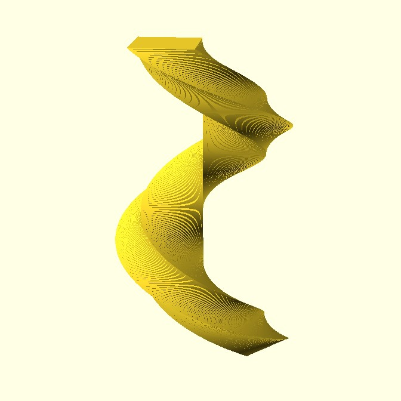

Линейная экструзия - это операция, которая принимает 2D-объект в качестве входных данных и в результате генерирует 3D-объект. Поворот - это количество градусов, на которые вытягивается форма. Установка параметра twist = 360 вытягивает один оборот. Направление вращения - по часовой стрелке. Если значение center равно false, диапазон Z линейного выдавливания составляет от 0 до height; если значение true, диапазон составляет от -height/2 до height/2. Масштабирует 2D-форму на это значение по высоте выдавливания. Slices как segments.
linear_extrude(heigh, center, slices, twist) (2D_figure)
примеры:
linear_extrude(height=50, center=False, slices=50, twist=500) (square(size = 10))
linear_extrude(height=50, center=False, slices=50, twist=50) (square(size = 10))
linear_extrude(height=50, center=False, slices=50, twist=50) (circle(d = 10))
linear_extrude(height=50, center=False, slices=50, twist=0) (circle(d = 10, segments = 3))
linear_extrude(height=50, center=False, scale = [5, 5], slices=50, twist=50) (square(size = 10))